Coding and Documenting with Qualcoder
Exploring Basic Coding
Let’s guide Sarah through the process of coding her transcripts using the features of the software, along with some key best practices. QualCoder provides a versatile platform that supports coding not only text, but also images (including PDFs), video, and audio. While Sarah’s project is focused on textual data—meaning we’ll primarily cover text coding in this workshop—feel free to explore these additional features for your own future projects!
Now that you’ve imported your files, let’s dive into some basic coding. This will help you get comfortable with the core features of QualCoder before we move on to more advanced techniques.
As mentioned in previous episodes, we are focusing on thematic analysis which essentially requires as a first step for us to assign a text label or tag to represent selected excerpts.
To do so, let’s click Coding and then, code text, select interviewee_01.docx. Let’s look at Q1 the first paragraph and say we want to code it as their career start in their career. After selecting the paragraph, do a right-click, and select Mark with new code. You should now see the code listed on the left-handed side. You should be able to rename it, change color, and other options with a right-click, but let’s leave it like that for now.
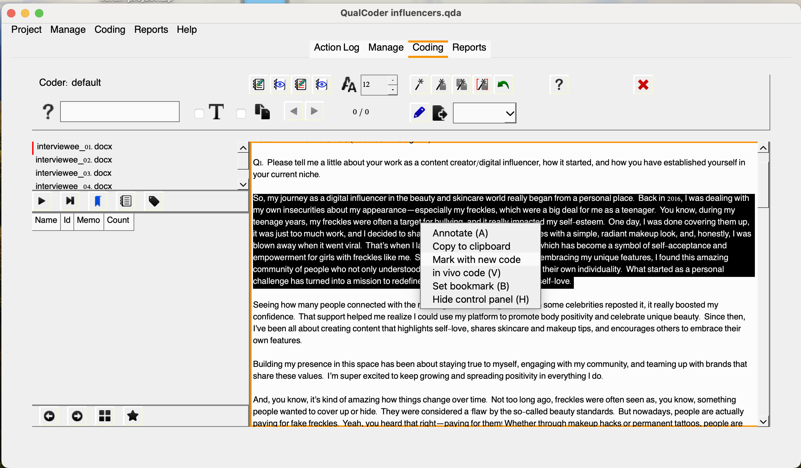
Once you name your code, and click OK you should see the new code in the lower left-hand side.
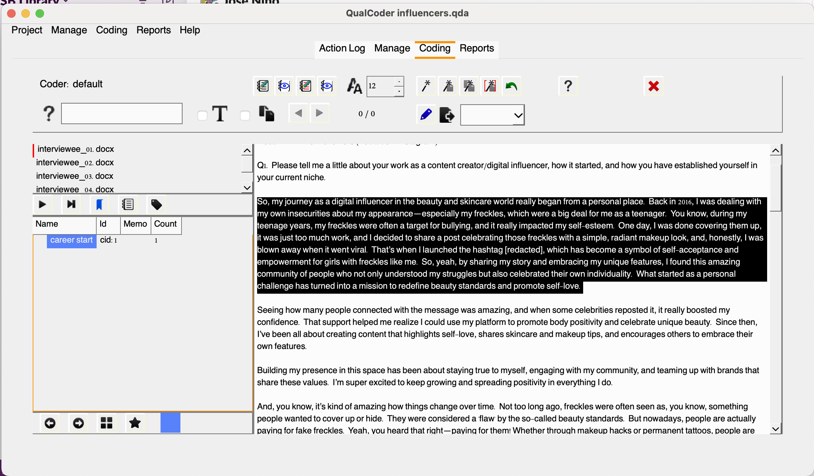
Note that the code will be assigned a cid which stands for code identifier, which is unique to each code and won’t be reused even if you delete an existing code. You might be wondering: would that be possible to apply multiple codes to the same excerpt? The answer is: Yes! You can create and assign as many relevant codes to an excerpt as necessary, even if you’ve already tagged it with a code. QualCoder will handle those overalps with no issues.
For example, let’s try coding the same paragraph. If we want to code the phrase “Back in 2016 (…) self-love” as self-acceptance, you can simply apply that code. You’ll notice that the last code you assign will be listed as “Mark with recent code”. This serves as a handy shortcut for quickly applying pre-existing codes. However, you can also select the code from the left-hand panel if you prefer.
Once you’ve coded an excerpt, right-clicking on it will bring up many additional options. You can choose Unmark to remove a code, or you can add a memo to the code, providing additional reasoning or context. This is useful for adding notes that will help you remember the rationale behind your coding decisions as you move forward with your analysis. So, let’s do that. Select the text, then choose Memo coded text and choose career start enter a description, for example: “How the interviewee’s career as a digital influencer and content creator began.”
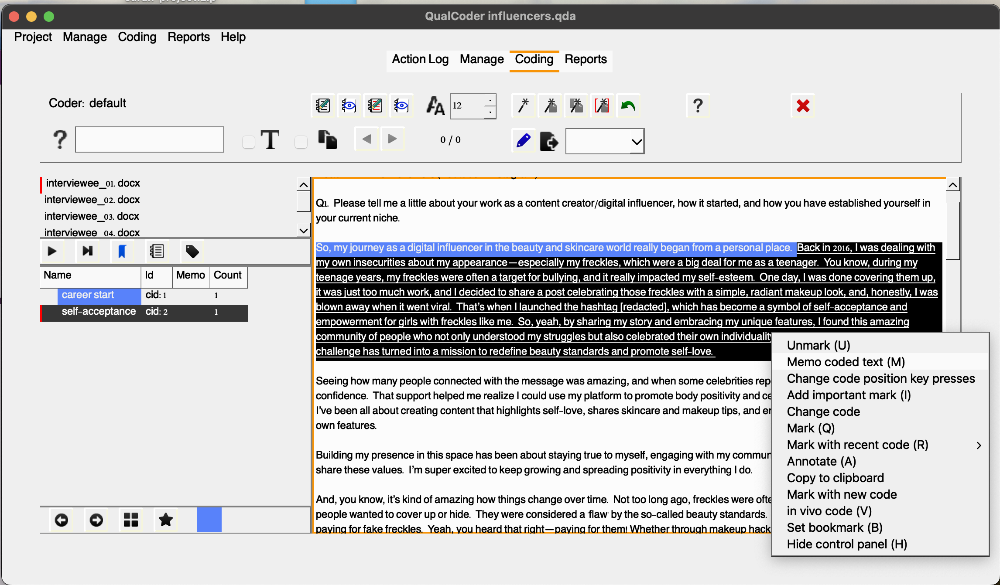
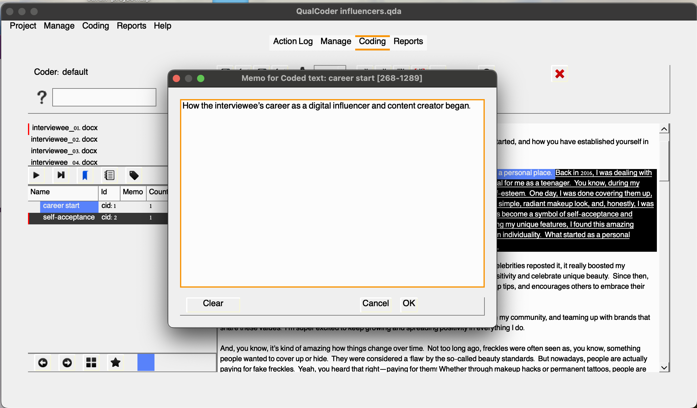
For example, you have coded the first two paragraphs as career start. Let’s say pandemic is another relevant code we would like to have added associated with the first paragraph and let’s add that.
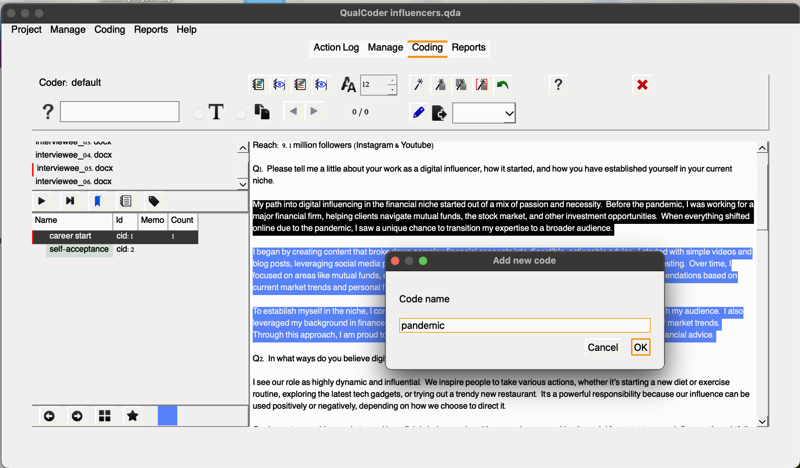
Keep in mind that when we switch files, the code counts will reset, since this view only displays the codes relevant to the selected file.
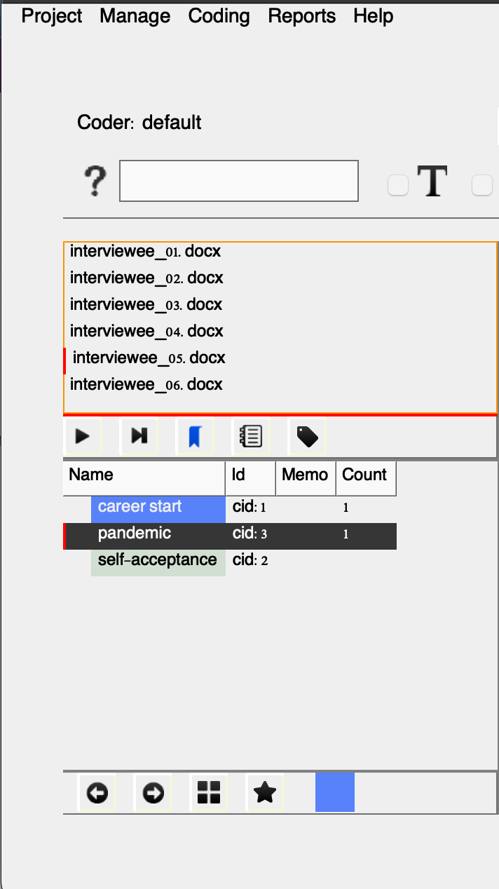
To view all excerpts associated with each code and across files, you’d have to click on Reports and then, Coding Reports. Select the files, and click the play button to generate the report.
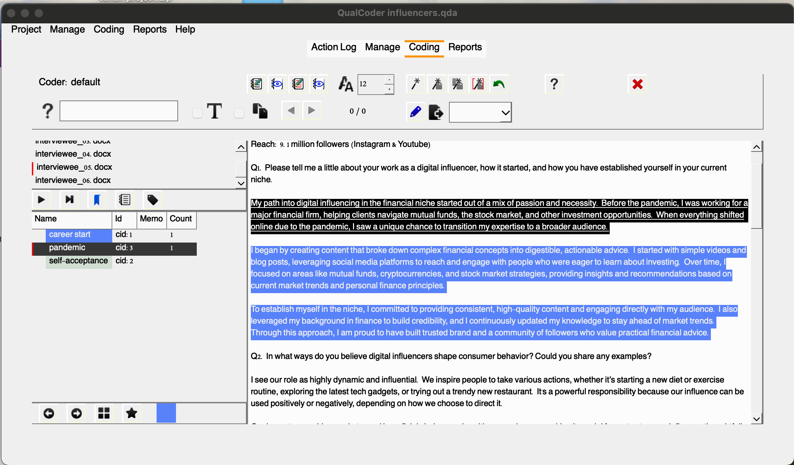
Okay, so now it might be a good time to introduce you to another concept and function available in QualCoder: categories.
Categories are used to organize codes in a hierarchical tree structure, helping to keep information well-organized and easily accessible. You can move codes into different categories, as well as move entire categories into larger parent categories. It’s also possible to move codes or categories out of their current positions to re-organize or restructure the hierarchy. Additionally, codes and categories can be merged by dragging and dropping a code onto another code or a category onto another category.
You don’t need to follow these steps immediately, as we’ll dive deeper into categories soon. However, for this example, I could create a ‘motivation’ category to group the codes ‘pandemic’ and ‘self-acceptance.’ This would serve as an organizational framework to categorize all the other motivational factors that influenced content creators and digital influencers in their decision to enter this space.
- motivation (category) – pandemic (code) – self-acceptance (code)
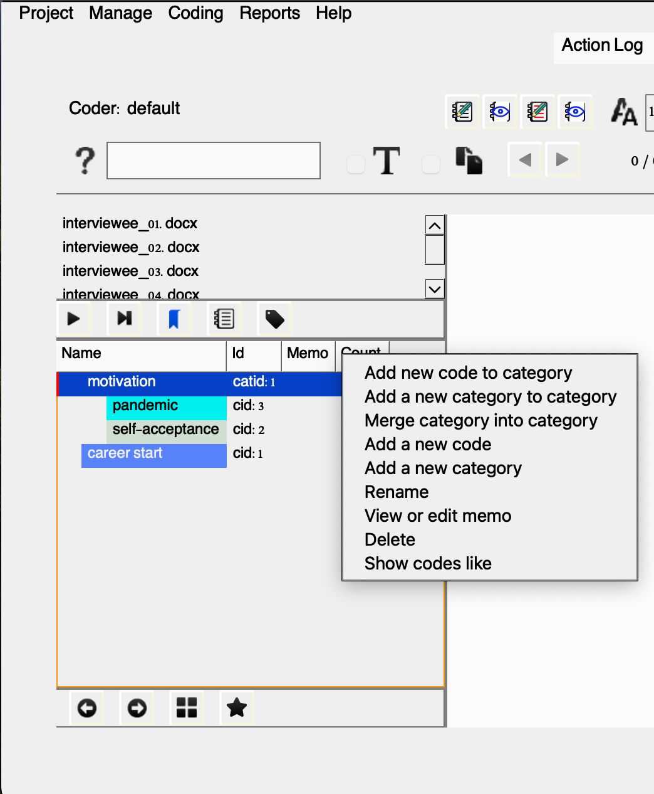
Unless you have a very structured, top-down approach (as covered in previous episodes) from the outset, the coding structure or tree is likely to evolve as you interact with the data. The advantage of using a QDA tool is that it allows you to dynamically adjust your coding structure in response to new insights and emerging patterns. As you delve deeper into the data, you can effortlessly create new categories, reorganize existing codes, or merge categories, ensuring that the coding framework adapts alongside your evolving understanding of the data. This flexibility enables you to continuously refine and improve your analysis as new information emerges.
You can also use in vivo coding, which means that instead of assigning a pre-existing or new code with a label, the selected text itself becomes the code. This can be particularly useful if you have key text snippets or specific keywords that you want to highlight directly from the data. However, in vivo coding has its limitations. It can generate potentially ambiguous fragments that lack proper context, making it harder to reconcile across different files or cases. For example, if I want to note that Linda’s journey as a content creator began in 2016, coding that exact phrase as in vivo might not be as useful as coding it under a more general category like “starting year” and applying that code consistently across interviews. The more traditional coding approach we just performed ensures more clarity and allows for easier comparison.
Organizing Things
Now that we have covered some of the basics of coding, we will reorganize our project to establish a more efficient structure. This is especially important for projects that may evolve into something more complex, as it helps ensure better maintainability and scalability moving forward.
To simplify things, let’s remove the existing codes and categories so we can start with a clean slate. To do so, right-click each code and choose delete.
Create Cases
A case is typically a source of information and can be associated with one or more files. As mentioned earlier, in some projects, you may have multiple documents associated with a single case. However, this won’t apply to our current example, as we’re only working with one interview transcript per case. This simplifies the structure for now, but keep in mind that QualCoder allows flexibility for more complex setups if needed in the future.
Still, to keep our project well-organized and make the most of QualCoder’s attributes feature— which can be helpful for extracting insights later on—let’s create a case for each interviewee and link their respective transcript to the case. We’ll use the same pseudonyms assigned to each research participant, as outlined in the file, to ensure consistency and clarity. This will allow us to efficiently track and analyze data specific to each participant.
Manage > Manage Cases > Pencil (Add Case) > Add your Case Name
We will be adding the following:
| Name | ID | Case |
|---|---|---|
| interviewee_01.docx | 1 | Linda |
| interviewee_02.docx | 2 | Margot |
| interviewee_03.docx | 3 | Gina |
| interviewee_04.docx | 4 | Otto |
| interviewee_05.docx | 5 | Ben |
| interviewee_06.docx | 6 | Alex |

Link Files
Now, let’s link the corresponding file to the case we created. Click on the file cell to manage files for the case. This will prompt another window, as shown below:

Now, create cases and link the files for each of the interviews. You should have one for Linda, Margot, Gina, Otto, Ben, and Alex. Note that you can also import CSV files with cases. This can be handy, especially for projects with several cases.
Describe Attributes
A case can be classified using attributes. An example case may be a person who has been interviewed (an audio or text interview file) and have published works (e.g. blog posts as files). The person can be assigned attributes such as their location, gender or occupation.
Each transcript has some characteristics associated with interviewees. It would be helpful to describe these as attributes for further analysis. We will only add two attributes: age group and niche. There are two different ways to create attributes: via manage > manage attributes or in the manage file window, you may select the blue plus sign. The latter might be more convenient in this case, considering we have only a few attributes and cases.
We can assign age groups (25-29, 30-35, or 35-40) to each case and add their respective niches, for example. This is what we will have for Sarah’s sample interviews, which you may use as a cheatsheet to describe the attributes while following along:
| Name | ID | Case | AgeGroup | Niche |
|---|---|---|---|---|
| interviewee_01.docx | 1 | Linda | 25-29 | Beauty & Skin Care |
| interviewee_02.docx | 2 | Margot | 30-35 | Fashion & Style |
| interviewee_03.docx | 3 | Gina | 30-35 | Home Decor & DIY |
| interviewee_04.docx | 4 | Otto | 25-29 | Travel & Adventure |
| interviewee_05.docx | 5 | Ben | 25-29 | Finance & Investment |
| interviewee_06.docx | 6 | Alex | 36-40 | Wellness & Health |

You can easily edit attribute values directly in the interface. However, to delete or modify an existing attribute column, please navigate to Manage and then, Manage Attributes
We can also import attributes from either a CSV or Microsoft Excel (XLSX) file. The first row should contain the attribute headings, and the first column must list the corresponding case names (e.g., ID1, ID2, ID3). Please note that case sensitivity is important. Here is a file we can use to save us time: attributes_influencers.xlsx
We won’t need to add memos for now, but they can provide additional context when attributes aren’t immediately apparent.
We now have a well-organized project in QualCoder, so let’s jump into some more advanced coding!
Practicing More Advanced Coding
To make the most of our time, we’ll focus our coding examples and activities on the interviewees’ responses to Question 4:
What do you see as the key ethical responsibilities of content creators and digital influencers? How should these ethics apply to endorsements and recommendations? Can you share any personal examples?
We’ll be using a combination of top-down and bottom-up approaches to demonstrate some important coding features in QualCoder. For now, don’t worry about the various icons on the top bar—we’ll explore those shortly. Instead, let’s concentrate on the lower right-hand window.
Creating Categories & Codes
After we presented the distinction between inductive and deductive coding approaches, Sarah mentioned that her preliminary literature review on the topic revealed some broad topics that could guide her initial coding framework.
She found that accountability, authenticity and transparency are ethical responsibilities frequently associated with the the work of content creators and social media influencers. She’s eager to explore these broad categories while keeping them flexible, allowing for refinement, including branching and or combination of existing codes, and the incorporation of new codes as they emerge. Therefore, we will first create these initial three categories to get her started with some coding using the tool.
It’s important to keep in mind that this process typically requires multiple iterations, which we might not be able to afford in a short episode. While we want to demonstrate the overall process to Sarah, she will likely need to keep adjusting the codes until she comes up with a more solid list of unambiguous ones.
So, we will start by representing these three main categories in QualCoder. To do that, let’s do a ctrl+click on the panel. This will prompt a window with the most important actions for you to engage with the development and organization of your codebook.
Click add a new category, and enter Accountability. Complete the same process for the other two: Authenticity and Transparency. You may also add a memo with some explanation about their meanings.

With QualCoder we can create as many levels we want (as long as they are not ambiguous) and also drag categories and codes to reorganize them. We’ll see more about it later.
We now have three initial categories to work with. Assuming we’re familiar with the transcripts, we’ll explore excerpts related to these categories and consider the possibility of developing new codes. It’s important to remember that while we can’t directly assign categories to excerpts, they serve as a useful guide for exploring the data. This approach will assist us in identifying relevant themes later on, as we’ve seen in previous episodes.
Ok, let’s open the Interviewee_01 transcripts. look at the answer to Q4, let’s read the first paragraph. In these few sentences we can identify a few relevant keywords: trust, reliability, respect, genuine/genuinely. There could be multiple ways to go about it, but let’s say we want to code this section as “Genuine Added-Value” and relate this to the “Authenticity” category.

We can then drag the new code and arrange it under Authenticity. You will notice that a color will be automatically assigned to the code. You may change colors, rename, add memos, move or edit codes using the menu options.
Note that the code now shows that there is one excerpt associated with the code. If you continue assigning more excerpts to a giving code, they will be reflected in that number, but at the file level in this view. You may check all excerpts assigned to a code across files by selecting Show coded files.

Your turn! Code the second paragraph in relation to the category Transparency and code it as Honest Reviews.

Alright, we have two new codes assigned to this interview, let’s move to other interviews and see if we can find excerpts related to this existing codes. I trust you have found some right away. After assigning Honest Reviews to another interview excerpt, let’s check the list of coded files.

Additional Coding Options
Great! Now that we understand how to create categories, assign and organize codes, and view excerpts related to those codes, let’s move our attention now to the top bar we mentioned earlier to understand other coding options we have to assist our coding tasks.

You may use the search box to perform queries using Regex functions (regular expressions) and locate specific terms within and across multiple documents. This can be extremely handy to speed up the process of getting to specific passages of the data. Once you perform a search you, unfortunately you won’t see the total of matching results. QualCoder will highlight those and you may use the back and forward arrows to navigate results.
Another useful feature is the ability to create file annotations for selected excerpts and coded sections, all conveniently displayed in one window. This allows you to highlight points that need clarification and passages you may want to revisit, especially if they have the potential to inspire new codes. You can use this tool to streamline your workflow and enhance your analysis. Note that the passage will be highlighted in bold so you can more easily spot what needs your attention. Similar approach can be followed with already coded passages, but typically those memos will reflect decisions behind the coding of that passage.

Alright, here are a few more features to support Sarah’s coding efforts. It’s clear that this approach to coding is much more effective than using post-its or word processors, wouldn’t you agree?
Automatic Coding
QualCoder also offers auto-coding text features represented in the icons below:

You can from left to right:
• auto-code exact text
• auto-code sentences based on a text fragment in the current file
• auto-code sentences based on a text fragment for all files
• auto-code the current file using start and end text marks. You can use ‘\n’ for a line ending character
Note that automatic coding is case-sensitive and requires a defined end for each sentence, with a default setting being a period followed by a space.
To auto-code exact text matches, you can assign multiple text sections using the pipe ‘|’ symbol. For instance, both “politics” and “politicians” can be assigned to the same code simultaneously (only for exact text matches).
Additionally, there is an undo option to revert recent auto-coding actions; however, this option will be lost if the project is closed and then reopened.
The auto-code exact text button includes a right-click menu with additional options. By default, it auto-codes all text, but you can also choose to auto-code only the first instance or specific matching text. When using the auto-code exact text feature, you can select which files to apply it to, making it a useful option if you want to identify a single instance across multiple files.
For example, let’s say Sarah Identified another code under the “Authenticity” category named “Genuine Engagement” to represent content/creators connections with their community of followers. In this case, after we create the code and select it, by choosing the first wand, we can auto-code all mentions of “genuine connection” as “Genuine Engagement”.

We can select as many files we would like to apply the auto-code to the chosen piece of text.

Note that the text is highlighted and coded accordingly.

Auto-coding features, which can be also referred as in vivo, verbatim coding, literal coding use exact phrases or terms from participants’ responses, enabling researchers to highlight key themes and concepts directly from the data. While this method can be effective for preliminary and first cycle coding, researchers should be aware of its potential drawbacks as the primary method. This approach can result in a loss of insight, as context may be overlooked. Additionally, auto-coding often oversimplifies the data, focusing on specific terms rather than capturing broader themes.
Additional Features in the Coding Panel
You may also edit text using the blue pencil (proceed with care as this are irreversible) and export your coded files with the list of codes in html, odt or txt. Caution in clicking the red X, that will erase all your coding efforts for that particular file.
Reporting & Graphing
After reviewing the basics with Sarah, she gained confidence in exploring the data using the tool independently. She initiated a new project over the weekend, concentrating on Q4, where she experimented with the tool and developed categories and codes. When she returned, she had some preliminary coding ready, allowing us to guide her through the reporting and graphing features in QualCoder. Although she hasn’t finished the analysis yet, Sarah feels like she is in a good place to navigate the reporting options within the tool with us.
Before proceeding, in QualCoder, select Open Project, then navigate to the analysis folder within the project example sarah-project. If you haven’t already unzipped the file, do so now, and then choose the influencers_q4.qda folder to open.
QualCoder offers a few options for users to explore, query, visualize the data and export those reports and outputs. It can provide code counting summaries in a variety of formats, word clouds, plotting in bars and pie charts, heat and tree maps. It also supports intercoder reliability testing for datasets coded, independently, by two people. Let’s see how Sarah some of the options she might want to consider for her analysis.
Let’s click reports to see options in QualCoder. We will start with coding reports:
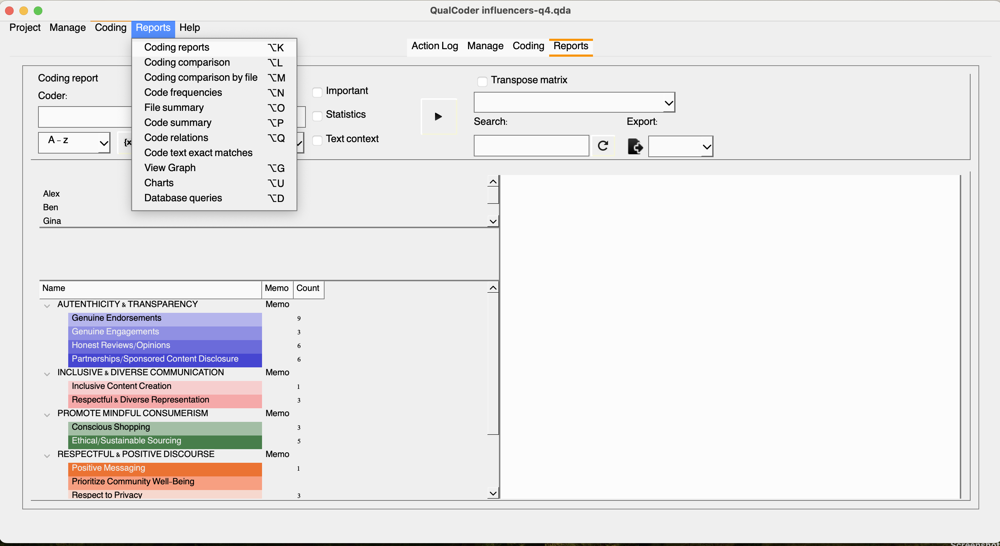
Once we select coding reports, we will be presented with a few additional filtering options. Since Sarah was the solo coder, we will only have one default coder for this project. Let’s leave it like that for now, and we will return to it a little later. If we click {x}, we will open the attribute selection parameters, where we can refine our report to include only responses from male influencers, for example. However, beforehand, we need to select at least one code from our list. Let’s choose the codes under the “authenticity and transparency” category.
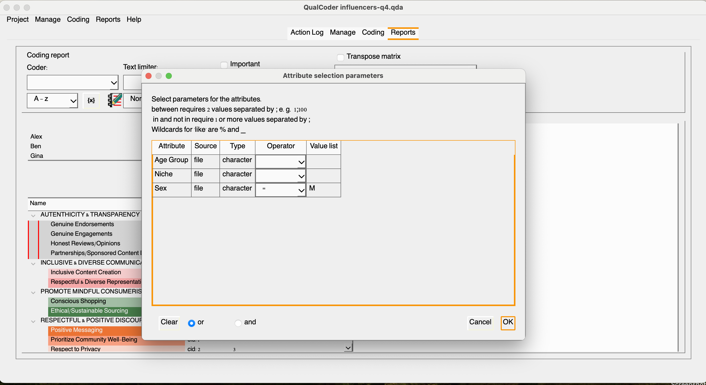
Once completed, click the play button to see the results. You may also export the results in your chosen format after naming the file.
We can create a matrix by selecting files and desired codes. Let’s select all files and all codes within the authenticity and transparency category. Select the top categories in the drop-down menu and click the play button. Great! We have a matrix, but if we check the transposed matrix, we will have a better view of the relevant excerpts within the selected category and across documents.
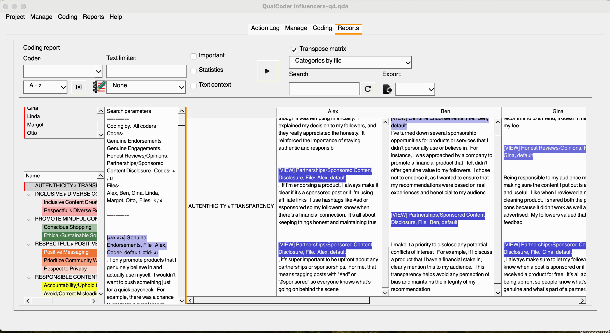
The `code summary` option allows the inspection of files and a detailed word summary for each code. Check it yourself!
Well, there are more reports to experiment and not all of them will be relevant for this project. So let’s now focus on the visualization options within the tool.
The view graph option will allow you to create a visualization based on existing selected codes by clicking on the bule plus sign. You may move things around and apply additional customization, but we want to keep it simple. Assuming we are happy with it, we can save the graph by clicking the downward arrow, and adding a name and description to it.
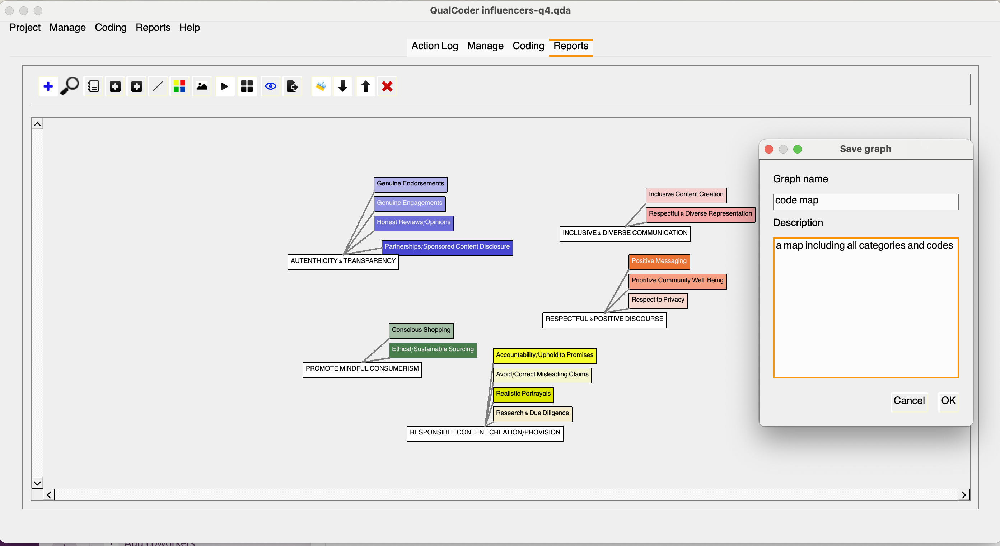
Let’s move on to the charts section, where you’ll encounter several options. We typically recommend researchers avoid pie charts, as they are not effective for communicating information with three or more slices; human eyes struggle to distinguish curves. Instead, let’s explore more effective alternatives.
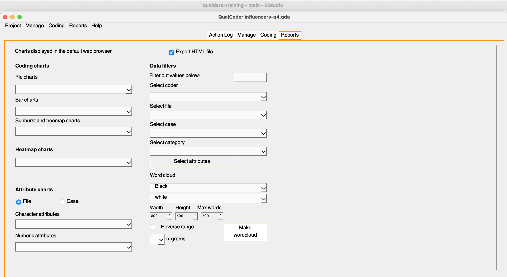
Take time to explore the options available. Which ones would make more sense for you visualize Sarah’s coding?
Multiple Coders & Coding Comparison
QualCoder was designed for individual use, allowing one person to work on a project at a time. However, a second coder can access the same project on the same computer, or the project folder can be easily transferred to another computer. To add a new coder, navigate to the project settings, enter the coder’s name, and click “Apply.”
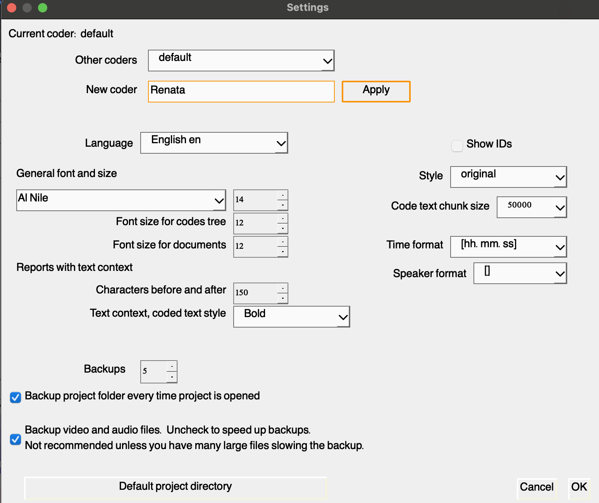
Add yourself as Sarah’s helper. To do this, return to the coding text feature and code one or two excerpts using the existing codes, ensuring that your name is listed as the coder.
For a quick refresher on the steps: go to the coding section, then select “text,” and choose one of the interviews or files. Once you’ve completed the coding, head back to the reporting tab. Select the coders and click the play button to view the results. This will generate a table similar to the one shown below:
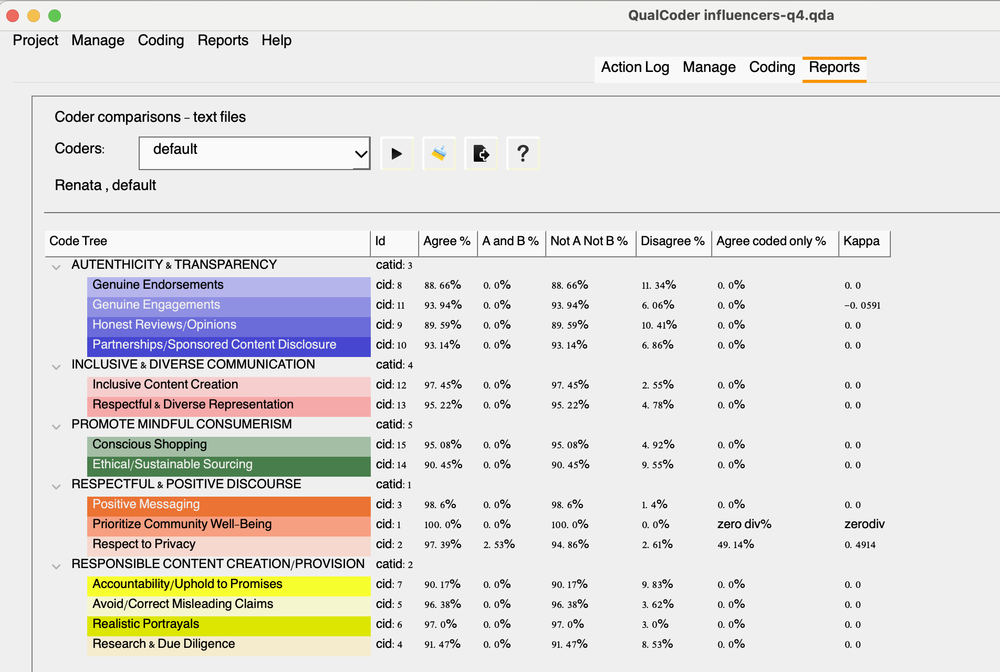
To interpret the table, you can click the question mark icon for a detailed explanation of what each column represents:
Agree %: Calculated across all text files as the (total dual coded plus the total uncoded)/total characters
A and B %: Calculated as the total dual coded characters/total characters
Not A Not B %: The characters not coded by either coder/total characters
Disagree %: Is 100% minus the total agreement percent.
Agree coded only %: Is the dual coded characters divided by the dual coded and single coded characters
Kappa: The statistic or coefficient also know as Cohen’s kappa (κ, lowercase Greek kappa) used to measure inter-rater reliability as described by McHugh (2012). This coefficient essentially assesses the degree of agreement and how well two independent coders classified/coded the same content into thematic groups.
You might be wondering how this can be useful to you, right? Well, let’s imagine you plan to publish your study. Several journals and peer reviewers might require that information, specially for disciplines that are more traditionally quantitative. Indicating that an independent coder agreed with your classification helps to support reliability, consistency and credibility of coding decisions that guided data analysis. But what are the thresholds?
While there are some variations in the literature, below is a typical rule of thumb:
Kappa = 0.00 should be taken as representing no agreement
0.00 ± 0.20 as “slight” agreement
0.21 ± 0.40 as “fair” agreement
0.41 ± 0.60 as “moderate” agreement
0.61 ± 0.80 as “substantial” agreement
0.81 ± 0.99 as “almost perfect” agreement.
A kappa coefficient of 1 represents perfect agreement.
Below are a few examples of papers reporting the kappa coefficient for interview data:
Coates, A. E., Hardman, C. A., Halford, J. C. G., Christiansen, P., & Boyland, E. J. (2019). Food and beverage cues featured in YouTube videos of social media influencers popular with children: An exploratory study. Frontiers in Psychology, 10, Article 2142. https://doi.org/10.3389/fpsyg.2019.02142
Dekoninck, H., Van Houtven, E., & Schmuck, D. (2023). Inspiring G(re)en Z: Unraveling (Para)social Bonds with Influencers and Perceptions of Their Environmental Content. Environmental Communication, 17(7), 701–719. https://doi.org/10.1080/17524032.2023.2237693
Kopp, B., & Dinkel, C. (2024). Adolescents’ values and values education through social media. EDULEARN24 Proceedings, 5257–5260. 10.21125/edulearn.2024.1289
Documenting Things
When conducting qualitative research, it’s crucial to maintain thorough documentation to ensure transparency and ethical compliance. Documentation should include both project and file level documentation. QualCoder allows you to export a few important files to support interpretation and reusability. Here’s what we should recommend Sarah to save:
Codebook: the coding framework used, including definitions of codes and categories.
All relevant materials generated within the tool, such as memos, notes, network diagrams, and classifications.
REFI-QDA CodebookAs seen, a codebook in qualitative or mixed-methods research is a structured list of defined keywords or phrases that represent key themes, concepts, or topics of interest to the researcher. These keywords or phrases are commonly referred to as “codes.”
In qualitative data analysis (QDA) software, codes can be linked to specific segments of data where they appear. While the codebook serves as a comprehensive listing of codes, many QDA programs also allow for the organization of these codes in various ways, depending on the features of the software used.
The Rotterdam Exchange Format Initiative (REFI-QDA) is a standard which enables interoperability between Qualitative Data Analysis Software (QDAS or CAQDAS) programs. It ensures that a codebook developed in one of the compatible software programs can be exported and imported into any other listed programs.
It’s important to note that because each program has unique functionalities regarding codes and their structure, users may encounter some issues such as inconsistencies and data loss when importing a codebook into a different software environment.
Check which QDA software are REFI-QDA compatible: https://www.qdasoftware.org/refi-qda-codebook
You may export your project and codebook using the REFI-QDA standard under the Export > Project option.

Attributes are also exportable in csv file, as indicated below:

Save these files using a consistent naming convention and ensure they are included in your data archiving package along with other important files, which will be discussed in more detail in the next episode.
Recommended/Cited Sources:
McHugh, M. L. Interrater reliability: the kappa statistic. Biochem Med, 2012;22(3):276-82. https://pmc.ncbi.nlm.nih.gov/articles/PMC3900052